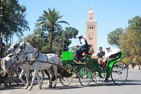
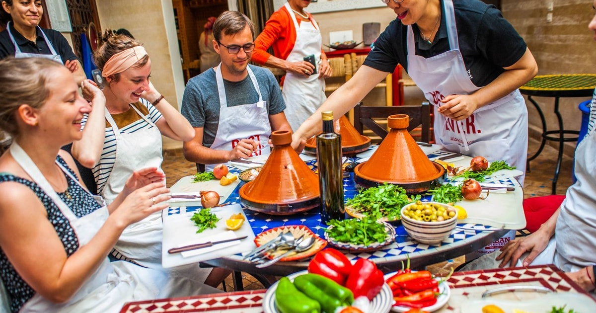

“Découvrez le charme de Marrakech, de la vibrante place Jemaa el-Fna et ses souks traditionnels, aux magnifiques jardins Majorelle et palais historiques. Profitez d’aventures dans les montagnes de l’Atlas ou d’une balade à dos de chameau dans le désert pour une expérience inoubliable.”

Promenade en calèche
Parcourir les rues de Marrakech en calèche permet de découvrir les monuments emblématiques comme la Koutoubia ou les remparts de la médina dans une ambiance détendue et pittoresque.

Aventure en Quad dans le Désert
Deux pilotes en quads rouges se saluent au milieu d’un paysage désertique parsemé de palmiers. Équipés de casques et de tenues de protection, ils partagent un moment de camaraderie avant de poursuivre leur exploration dans cet environnement aride et exotique.

Vol en montgolfière
Observer le lever du soleil depuis une montgolfière est une expérience inoubliable qui offre une vue panoramique sur les plaines désertiques, la palmeraie et les montagnes de l'Atlas.

Balade à dos de chameau
Explorer la palmeraie ou les zones désertiques environnantes à dos de chameau est une activité typique qui plonge les visiteurs dans une ambiance saharienne, loin de l'agitation de la médina.

Cours de cuisine marocaine
Apprenez à préparer des plats traditionnels marocains lors d'ateliers culinaires immersifs.

Visite du Jardin Majorelle
Créé par le peintre Jacques Majorelle et restauré par Yves Saint Laurent, ce jardin offre une oasis de tranquillité avec ses plantes exotiques et ses couleurs vibrantes.